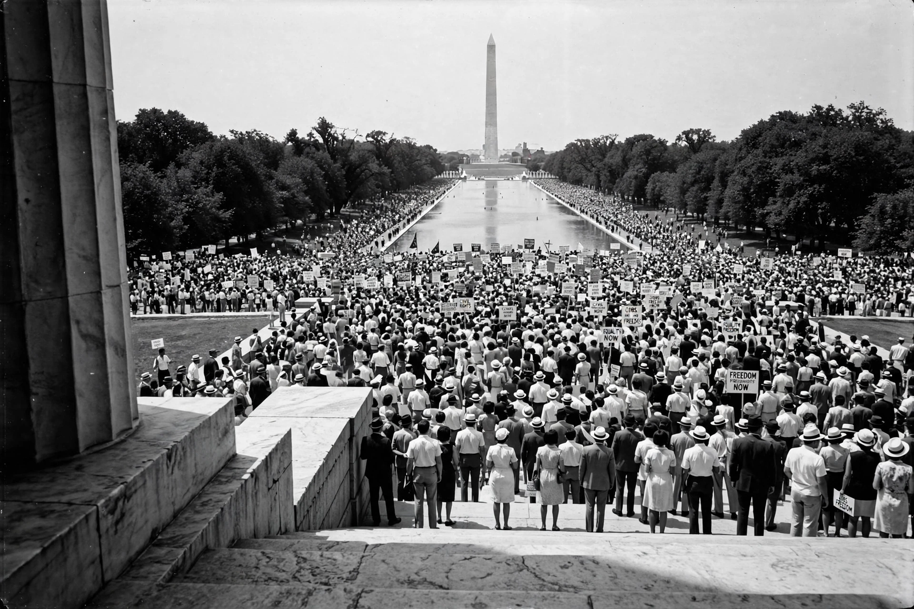

Civil rights movement
From Wikipedia, the free encyclopedia
The civil rights movement was a decades-long struggle by African Americans in the United States to end racial segregation and discrimination and secure equal rights under the law. Its classical phase (1954–1968) combined litigation, mass protest and federal legislation: Brown v. Board of Education (1954) declared school segregation unconstitutional; the Montgomery bus boycott (1955–56) made Martin Luther King Jr. its best-known leader; sit-ins (1960), Freedom Rides (1961), the Birmingham campaign and the March on Washington (1963) built irresistible pressure; and the Civil Rights Act (1964) and Voting Rights Act (1965) dismantled the legal architecture of Jim Crow, followed by the Fair Housing Act (1968).

The March on Washington for Jobs and Freedom, 28 August 1963.
The movement's roots run through the NAACP's legal campaign, Black labour and church organisation, and the Great Migration; its methods — nonviolent direct action and civil disobedience in the tradition Thoreau named and Gandhi developed — were sustained by local communities at great cost, including the murders of activists and children. It transformed American law and politics, supplied a template for other movements (women, disability, LGBTQ rights), and left unfinished business in economic inequality and de facto segregation that successor movements continue to contest.
See also
See also
Segregation in the United States · Jim Crow laws · NAACP · Montgomery bus boycott